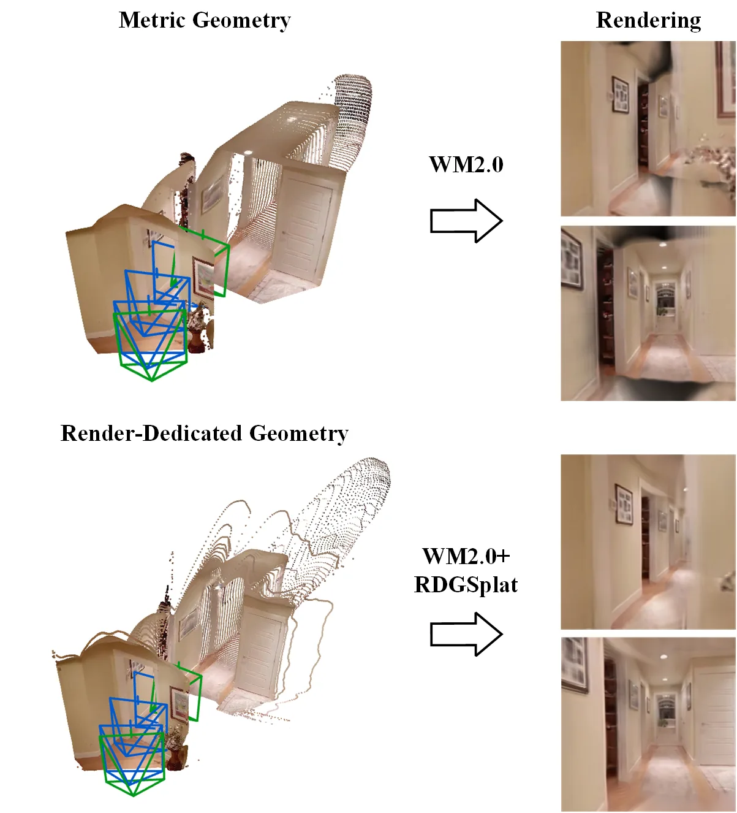
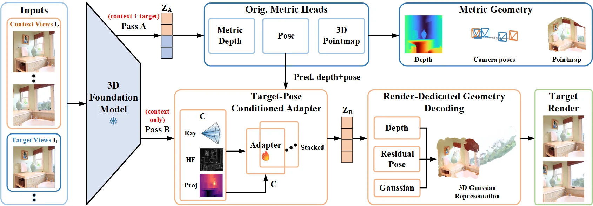
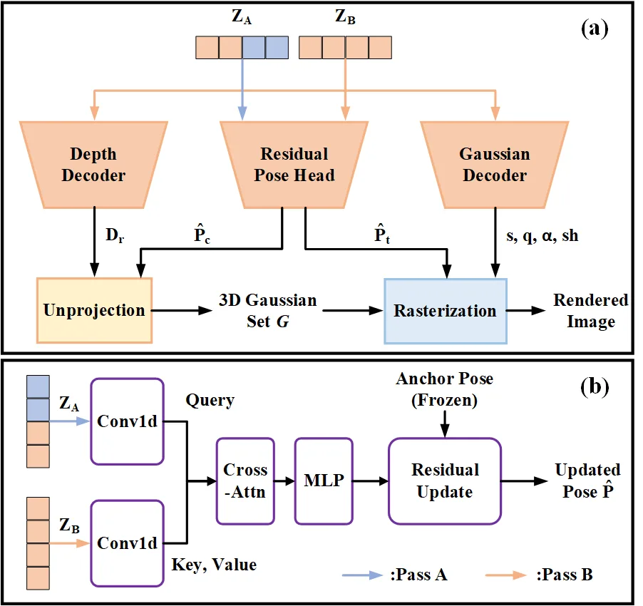
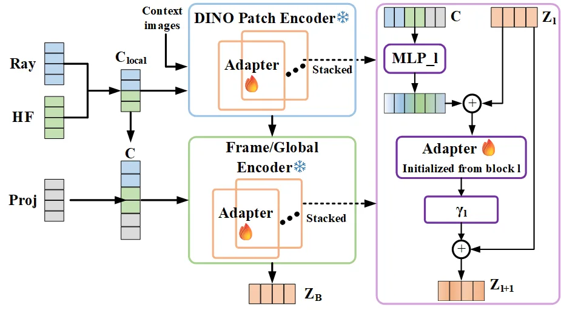
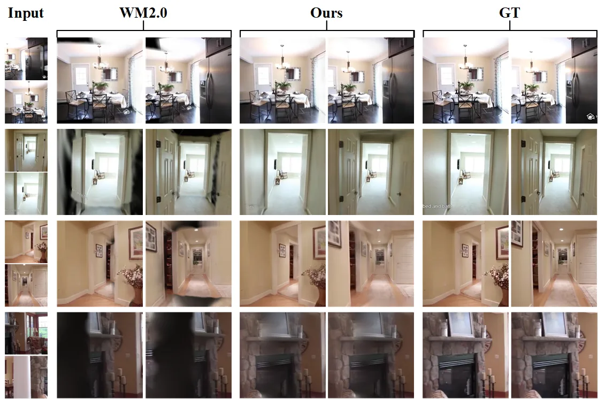
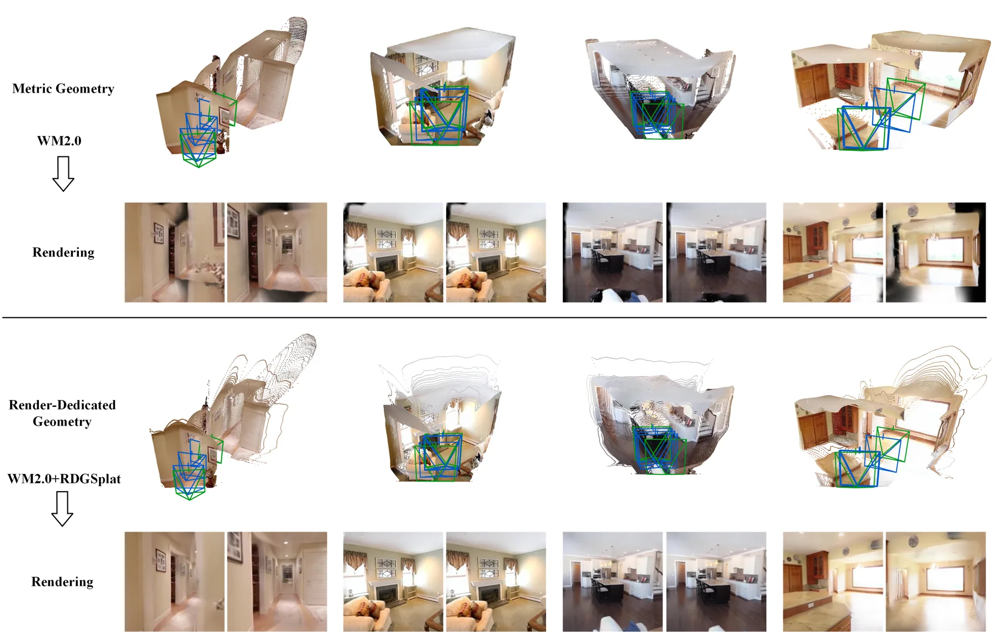

RDGSplat：面向新视角合成的渲染专用几何
RDGSplat: Render-Dedicated Geometry for Novel View Synthesis
从冻结 3D 基础模型中解码出第二套“渲染专用几何”：用复制解码器（RDGD）在纯光度监督下重定位高斯图元，再用目标位姿条件适配器（TCA）在残差流内让表示依赖被渲染视角；四基准三骨干全部提升（WM2.0 RE10K 20.918→24.266 dB），同时度量深度/位姿逐位不变，仅训练 205.5 M 参数（14.7%）。
PSNR
trainable
PSNR gain
metric deviation
作者、单位与技术谱系 · Research context
作者与单位
研究脉络
- DUSt3R（Wang et al., 2024）/ VGGT（Wang et al., 2025）/ HY-World 2.0（WM2.0, 2026）方法基座关系：以这三类前馈 3D 基础模型为被冻结的骨干，直接复用其 token 流、深度/位姿头与高斯头。[论文 §2.1、§4.2]
- ControlNet（Zhang et al., 2023）方法上游关系：‘用冻结模型的可训练副本作为条件路径、输出汇回冻结路径’的适配范式是 TCA/RDGD 的架构先例。[论文 §2.3]
- Splatt3R（Smart et al., 2024）/ AnySplat（2024）/ NoPoSplat（2024）问题上游/对比关系：同为‘把 3D 基础模型接到渲染’的相邻工作，RDSplat 与它们的差异是冻结权重而非更新权重。[论文 §2.2、§2.3]
- 前置前馈新视角合成：pixelSplat / MVSplat / NAS3R问题上游关系：作为合成任务的对照与之一/初始化来源，Argos 式的‘渲染目标’由它们确立。[论文 §2.2、§4.1]
合作网络
- UC Davis 同单位共同署名Zhijie Zheng → Xinhao Xiang / Jiawei Zhang关系：共同署名（同单位）[arXiv 首页署名]
- 对 WM2.0 / NAS3R / VGGT / MASt3R 的公开技术依赖RDGSplat → HY-World 2.0(WM2.0)、NAS3R、VGGT、MASt3R 释放的模型关系：明确技术依赖（非共同署名）[论文 §3、§4.1]
作者与单位来自论文首页署名与邮箱域名（均为 @ucdavis.edu，单位 UC Davis）；谱系依据正文引用标注为“基于来源的解读”。合作边仅记录同单位共同署名与公开技术依赖；三位作者同属一单位，未发现跨机构署名边，故不推断导师/师生关系。
方法本质拆解 · What actually changed
是不是微调？
不是微调骨干，也不是从头训练。f_θ（骨干）与 h_m（预训练度量头）全部冻结；被训练的是复制出来的深度头与高斯解码器副本，以及注入残差流的目标位姿条件适配器。复制模块继承源参数、仅在光度监督下优化；TCA 的适配块也由对应深度的预训练层初始化、经学习尺度 γ 起步近恒等。即权重确实被改的只有新增副本与适配器，冻结骨干的度量输出逐位不变。
有没有额外约束？
新增约束有三类：一是把目标位姿作为条件（Plücker 光线 + 高频内容 + 投影状态，经 Fourier 编码后在骨干内部若干深度注入残差流）；二是训练目标仅光度项 ℒ_mse + λ_p·ℒ_lpips（λ_p=0.05），不含任何几何标注；三是施加对平移修正的惩罚项 λ_r·‖Δτ/‖τ_A‖‖²（λ_r=1），把相机平移限定为相对冻结锚点的受罚残余、旋转完全保留。约束作用在表示的条件输入与目标函数上，不改变输入接口。
推理/后端到底做了什么？
推理时对冻结骨干跑两次前向：一次原样喂度量头输出度量几何，一次只在 context 图上经 TCA 改造后喂复制的渲染分支；渲染分支从 z_B 解码渲染深度与图元属性，用冻结预测的 context/目标位姿（加受罚平移修正）反投影成高斯并光栅化。没有迭代式全局 BA/因子图后端，也没有逐场景优化；代价仅是一次额外前向。
方法本质是什么？
本质是：把‘度量几何’与‘渲染几何’视为两个不同评分标准下的两个解，因而不让同一套权重去折中，而是让同一冻结模型被评估两次、各配一套解码器。它改变的是‘渲染所读几何从哪来’——从度量估计改为在光度监督下单独解码；靠复制解码器与位姿条件适配器把两条路径分开，从而既提升渲染又不牺牲度量预测。没有训练新骨干，也没有引入新的几何后端。
输入为 context 图像与目标视角（位姿由冻结相机头估计）；改变的位置是在冻结骨干上加入残差流内的目标位姿条件适配器（TCA）并复制预训练解码器（RDGD），使渲染分支读一套专用的表示；合并动作是仅用光度监督优化副本、把相机平移限定为对冻结位姿锚的受罚残余；直接效果是新视角合成在四基准三骨干全面提升（WM2.0 RE10K +3.348 dB），同时度量深度/位姿逐位不变。

动机与问题Motivation
动机与问题
前馈 3D 基础模型（DUSt3R、VGGT、HY-World 2.0）一次前向就给出深度、位姿与点图，其中 WM2.0 还挂了高斯头，可用一个网络同时做重建与渲染。但实测其渲染有严重覆盖丢失（图 1(a)）。作者观察到缺陷来自喂给渲染器的几何、而非渲染器本身：该几何在度量目标下估计，从未按‘如何渲染’被评分，于是奖励把表面放在场景真实处，却不约束它该有多厚、图元该放在哪里才能从新视角被看到。近期适配方案（如 AnySplat、NoPoSplat）通过更新骨干权重重定位，但单次前向只产出一套表示，度量头读的正是渲染器读的 token，更新后模型不再服务其原本的任务，且每换一个骨干都要重来。冲突的根源就是两个评分标准的分离。
方法Method
方法总览
RDGSplat 让冻结骨干 f_θ 被评估两次（式 2）：z_A=f_θ(I_c∪{I_t}) 未改动、喂预训练度量头 h_m 得 (D,Π,X)；z_B=f_θ(I_c;TCA) 只在 context 图上、经目标位姿条件适配器改造，喂渲染分支。渲染分支含两部分：RDGD 复制预训练深度头 g_d 与高斯解码器 g_s，各继承源参数后仅在光度监督下优化，从 z_B 解码渲染深度 D_r 与每图元属性 (s,q,α,sh)；残余位姿头读 z_A/z_B 两流、从联合流对适配 context 流做注意力，回归一个相对冻结锚点 P_A=(R_A,τ_A) 的平移修正 Δτ（旋转 R_A 原样保留）。最后用修正后的 context 位姿 P̂_c 反投影渲染深度得图元位置 μ、拼成高斯集合 G，在修正目标位姿 P̂_t 下光栅化得 Î_t。两次评估中，第二次的条件由第一次预测的深度/位姿组装、且已从计算图 detach，故梯度不回流第一次评估。
关键技术细节
TCA 的关键是‘注入残差流’：不在骨干最后一层之后外挂适配，而是在骨干内一组均匀分布深度 S（覆盖 per-frame patch 编码器与跨视图块）上，把条件投影到 token 宽度后相加，块修正再经一个学习到的逐通道尺度 γ_l（初始 1e-3，使适配分支起步接近恒等）进入残差（式 6）；适配块 B_l 由对应深度的预训练层初始化。条件是三项拼接再 Fourier 编码 ψ：Plücker 光线 C_ray（各 context 相机视几何）、高频内容 C_hf（原图减去低通版，恢复被 patch 编码器衰减的细节）、投影状态 C_prj（由目标位姿与第一次评估的深度/位姿算出的每 token 图元在目标视角的落点）；patch 编码器内因逐视图独立而不可算 C_prj，故该深度只送 C_local=ψ([C_ray,C_hf])，跨视图块送完整 C。训练目标只有光度项 ℒ_photo=ℒ_mse+λ_p·ℒ_lpips（λ_p=0.05），并施加平移残差惩罚 λ_r·‖Δτ/‖τ_A‖‖²（λ_r=1）以防自监督下目标位姿精度退化；所有 f_θ 与 h_m 参数冻结。

实验Experiments
实验设置
训练在 RE10K（取训练划分的一个随机 20% 样本），零样本测试在 ACID、DL3DV 与物体中心的 DTU；度量几何在 KITTI（视频深度，CUT3R 协议、逐序列尺度对齐）与 RE10K（两视角位姿，NAS3R 的 AUC 协议）评测。合成指标为像素级 PSNR、patch 级 SSIM、特征级 LPIPS；深度用 Abs Rel 与 δ1（1.25 内点率）；位姿用累积误差曲线在 10°、20° 的面积。每个骨干报告两设置：预训练模型单独评测，与同一模型挂上 RDGSplat。合成对照含 pixelSplat、MVSplat、NoPoSplat、NAS3R；度量对照含 DUSt3R、MASt3R、VGGT。实现：PyTorch、单卡 NVIDIA A6000，WM2.0 训 200k 迭代、两个 NAS3R 变体各 50k；除说明外输入为两 context 视角；目标视角由预测（而非真值）位姿渲染。
实验数字与比较
合成（来源：论文表 1）：WM2.0 挂 RDGSplat 后 RE10K PSNR 20.918→24.266（+3.348 dB）、ACID 21.752→24.894、DL3DV 16.674→19.350、DTU 14.445→16.488；NAS3R(VGGT 初始化) 26.394→27.732（+1.338 dB）、NAS3R(随机初始化) 23.594→24.906。三个骨干、四个基准、三种指标无一回退；WM2.0 是唯一未用渲染目标训练的骨干，故增益最大，且挂上后已超过端到端为渲染训练的 pixelSplat/MVSplat（RE10K 24.266 vs 23.859/24.012）。度量保持（表 2）：WM2.0+RDGSplat 在 KITTI 视频深度 Abs Rel 0.060（优于 VGGT 0.061、DUSt3R 0.144），RE10K 两视角位姿 AUC@10° 71.6（DUSt3R 54.1）；作者报告预测逐帧与预训练模型相同、最大绝对偏差为零，位姿 AUC 一致到小数点后四位。效率（表 4）：仅训练 205.5 M 参数（14.7% 的 1.4 B 骨干），其中仅 39.0 M（2.8%）从零实例化、166.5 M 为复制骨干已有模块；对比微调同一骨干做渲染需更新全部 1.4 B。
消融/失败边界
组件消融（表 3，30k 迭代，WM2.0）：基线 20.918；仅加 RDGD 23.485（RE10K）/24.145（ACID）；仅加 TCA 22.613/23.615；两者同时 23.861/24.387。二者各自相对基线的增益 2.567 与 1.695 dB 之和（4.262）大于共同增益 2.943 dB，说明两模块部分地针对同一限制——一个重定位图元、一个条件化被读的表示。视角数消融（表 5）：从 2 到 10 个 context 视角，RDGSplat 每一档都超过冻结骨干，且三个 context 视角即可达到骨干用十个视角的质量，增益随视角增加从 2.664 降到 2.084 dB 但不消失。失败边界：论文明确性能下降出现在‘直接调相机平移’时（故必须把预训练位姿留作锚点），且渲染专用几何只按渲染评分、不替代其旁的度量几何；方法设计上也要求骨干暴露 token 流与冻结深度头。
局限与迁移Limitations & Transfer
局限与待核验
作者明确承认三点局限：其一，方法要求骨干暴露 token 流与冻结深度头，不满足该接口的模型无法直接套用；其二，直接优化相机平移会造成目标视角位姿精度严重退化，故仍须把预训练估计留作锚点、只学受罚修正；其三，渲染专用几何只按渲染质量评分，不能替代度量几何。我们待核验项：(a) 所有实验基于 RE10K 的随机 20% 训练划分，满量训练下的增益曲线未报告；(b) 训练硬件（单 A6000）与 WM2.0/NAS3R 的迭代预算已给出，但官方代码/权重未在正文提供，端到端复现待核验；(c) ‘预训练输出逐位不变’是核心卖点，但只在 KITTI 深度与 RE10K 位姿两个基准上验证，其他度量属性（如点图/不确定度）是否同样保持未报告；(d) 与 Splatt3R（同样冻结 MASt3R 但偏移逐点）等冻结式方法的头对头未展开。
与你研究路线的关系
可迁移模块有三处：第一，‘同一冻结模型评估两次、各服务一个评分标准’的双趟设计，是把‘状态估计的物理一致’与‘下游任务指标’解耦的干净范式——对应你在融合后端里既想保持度量/不确定度、又想适配下游任务时，可用‘另开一条残差流分支 + 复制解码器’而非整体微调。第二，‘目标位姿条件适配器注入残差流、并用逐通道尺度 γ 从接近恒等起步’的适配方式，可直接用于把外部位姿/运动先验作为条件注入你的网络化状态估计，且保证初始化时不影响原输出。第三，‘把位姿留作锚点、只学受罚残余 Δτ’的技巧，与你用 GNSS/INS 先验锚定、再学小幅修正的思路同构。下一步实验建议：(1) 在自建前馈几何/深度模型上做最小 A/B——整体微调 vs 冻结双趟 + 复制解码器，量化下游指标与度量保持；(2) 复现‘平移残差惩罚 λ_r’对位姿稳定性的影响，找到你任务中先验锚与网络修正的权重拐点；(3) 用其‘逐位不变’验收标准，检验你冻结/适配方案是否真正保住了度量预测。







